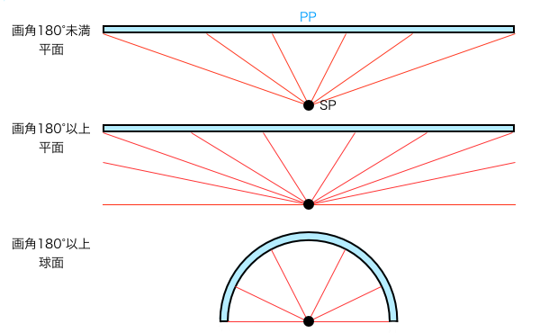
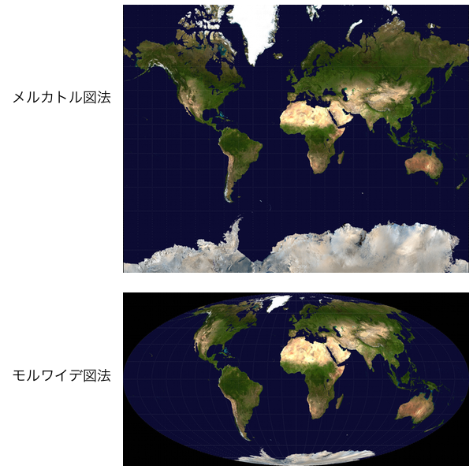

直線を楕円にするだけの歪んだ魚眼パースの描き方
最初になぜ魚眼パースは歪んでいるのかということを理解しておきましょう。パースに関する専門用語は、建築パースについて勉強している建築パースを徹底研究！パース理論の基礎知識と描き方の記事を参考にして頭に入れておいて下さい。魚眼レンズの画角は一般的に180°となっています。つまり自分が立っている視点SPより前に広がる空間全てが画面PPに投影されるということです。しかし考えてみてください、投影図というのは視点SPから直線を伸ばして被写体の輪郭に接する軌道を通って画面PPと交わった点で像を結ぶものです。画角180°、つまり画面PPと平行に伸びる視線は一体どこで画面PPと交わって像を結ぶのでしょうか。当然ですが理論的に交わりません。もしも画角179°とかであれば理論的にはいずれ交わりますが、画面PPの幅がほぼ無限大となってしまいます。だから画角の大きなレンズの像を平面の画面PPで考えるのは実用的ではないんですね。
そこで画面PPが大きくなりすぎないように投影させるために、画面PPを平面から球面に変更してみます。すると画角180°の投影図を包み込むようにキャッチして像を結ぶことができます。これで画角180°以上の像を捉えられて一件落着かと思いきや、像が球面に映されたままだという問題が未解決です。世の中のキャンバスやディスプレイが球面で作られているならそのままで構わないのですが、残念ながら長方形のものが一般的なようです。やはり球面に映された像を平面に変換する作業が必要なようですね。

地球を四角い地図に描ける理由
ここで球面と平面に描かれた絵を相互変換している例といえば何か思い出しませんか？有名なものでいえば世界地図のメルカトル図法とモルワイデ図法です。前者は球体である地球の世界地図を平面で表したもの、後者は同じように平面に面積を正しく表したものです。メルカトル図法においては緯度が南北に近いほど面積が拡大して表されるようになっているので注意してください。いずれにしてもこの二つの図法は球体を平面に落とし込んでいます。これを魚眼レンズに応用して考えると、面積を正しく表しているモルワイデ図法のように楕円で描かれることになります。実際に魚眼パースの絵は楕円で描かれていますよね。変換する過程は割愛します。なぜならただの変態的難易度の数学だからです。

出典 Wikipedia メルカトル図法
出典 Wikipedia モルワイデ図法
テンプレートを使った魚眼パースの描き方
前回の一瞬で背景イラストのアングルと画角を決めるパースの描き方の記事では望遠パースと広角パースに対応したテンプレートを作成しました。なんと魚眼パースを描くためのテンプレートも直線を楕円に変えるだけでイラストに応用できます。
楕円は、楕円の中心と視心が一致するように、また、楕円の長軸の長さが視円錐の直径と一致するようにして、水平方向と垂直方向に等間隔で短軸を変化させていくようにします。いくつもの楕円を敷き詰める間隔をどう決めたかというと、とりあえず視円錐の中心線と、5°間隔で作図した円周角が交わる点を通るように楕円を作図していきました。言葉で言っても伝わらないと思いますが今回はこうしたというだけですのし、この間隔というのは特に何が正しいということはないので、グリッドの精度や作成の手間などのバランスが丁度いいお好みの間隔でどうぞ。とにかく視円錐の直径と同じ長軸幅を持つ楕円を使っているということに注意すればいいです。百聞は一見にしかず、下図を見てください。

魚眼パースのテンプレートが普通パースのテンプレートと違うのは、左右の奥行きだけでなく高さ方向にもパースが取られているところです。普通パースは透視図法なので高さ方向は垂直にする描き方が一般的です。本当は高さ方向のパースを取る事もできますが、高さ方向のパースを取って歪むと透視図法的には不自然になりますし、テンプレートが煩わしくなるので省略しています。魚眼パースでは、水平方向の楕円は左右の消失点に向かうパース、垂直方向の楕円は高さ方向のパース、そしてもう一つの視心に接するように描かれた楕円は奥行きのパースとなっています。奥行きパースの楕円の長軸の長さは視円錐の直径と同じにしてますが、パースの取り方はこの方法で正しいのかは不確かなのでそれっぽいやり方でごまかしてます。このテンプレートを使い方については普通パースのテンプレートと同じなので一瞬で背景イラストのアングルと画角を決めるパースの描き方の記事のテンプレートと一緒に、後日テンプレートを使ったイラストメイキング的なことでもやって描き方の解説をしようと思います。
こう見てみると、魚眼パースというのは一点透視図法の上下左右に消失点を設定した四点透視図法ということができますね。ただそういうことになると、二点透視図法のようなパースを魚眼パースに乗せるときのイラストの描き方をどうすればいいのかわからなくなります。魚眼パースのなかで正面を向いていない立体を描く方法をもう少し勉強する必要がありそうです。それに魚眼パースの絵を描くときは必ずしも画面内に消失点がなければいけないというわけではありません。画面レイアウトの考え方は一瞬で背景イラストのアングルと画角を決めるパースの描き方の記事で説明したことと変わりはなく、魚眼パースの視円錐の一番良いと思うところを切り取ると画面内に消失点が無い構図もありえるというわけです。ちなみに...